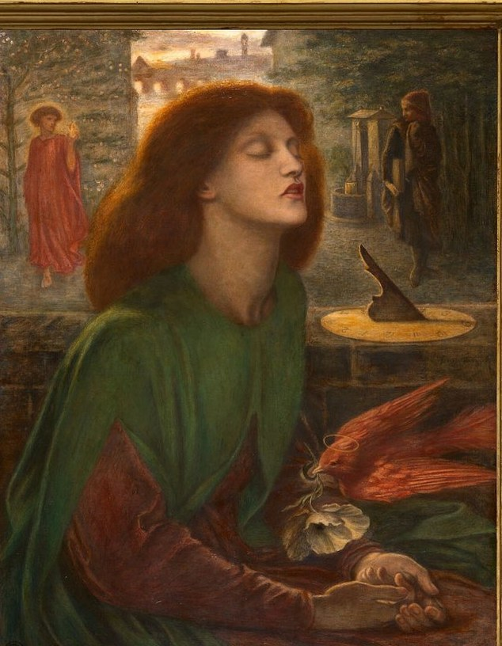

one walk through Florence, as the Pre-Raphaelites imagined it · after Henry Holiday and Dante Gabriel Rossetti

Beata Beatrix
Dante wrote in the Vita Nuova, The New Life, that he first saw Beatrice when they were children, that nine years later she greeted him in the street, and that later still she passed him without a word. She died in 1290. He wrote about her for the rest of his life.
Rossetti and Holiday painted these scenes six hundred years afterwards. Their Florence is partly imagined: the Palazzo Vecchio you started beside was not begun until 1299. The streets and the river are the real ones.